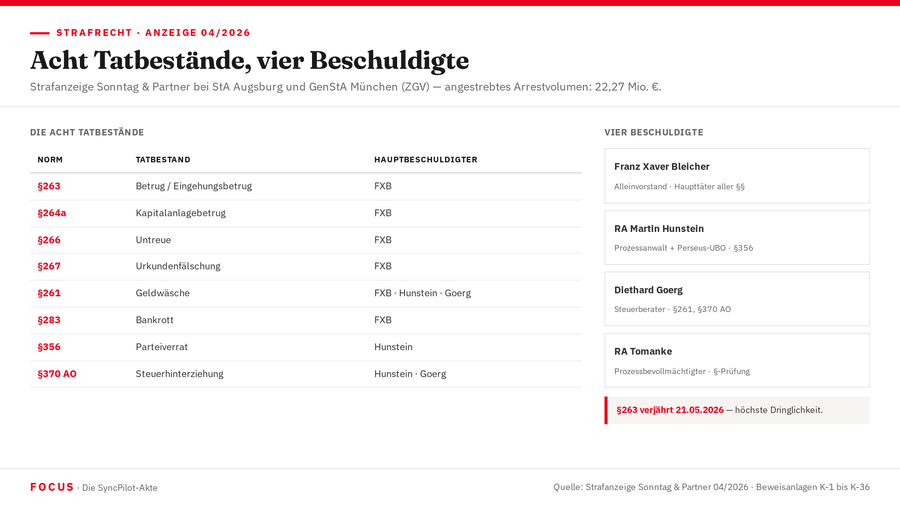

Die Strafanzeige
April 2026: Im Namen der Klägerin LVS wird eine Strafanzeige mit acht Tatbeständen, vier Beschuldigten und 36 Beweisanlagen (K-1 bis K-36) bei der Staatsanwaltschaft Augsburg und der Zentralstelle Geldwäschebekämpfung und Vermögensabschöpfung (ZGV) der Generalstaatsanwaltschaft München eingereicht.

Nicht Frust — Forensik
Die Strafanzeige vom April 2026 ist nicht das Werk eines frustrierten Investors. Sie ist das Ergebnis von Monaten akribischer forensischer Rekonstruktion — acht Tatbestände, weil ein einziger Plan mehrere Straftatbestände gleichzeitig erfüllt.
Eingereicht bei zwei Behörden: der Staatsanwaltschaft Augsburg (Schwerpunkt WiKri, Gögginger Straße 101) für die Haupttatbestände sowie der Zentralstelle Geldwäschebekämpfung und Vermögensabschöpfung (ZGV) der Generalstaatsanwaltschaft München (Prielmayerstraße 7) für die grenzüberschreitenden Geldwäsche- und Offshore-Komplexe.
Verjährungsrisiko: §263 StGB läuft am 21.05.2026 ab — genau fünf Jahre nach Vertragsschluss. Der Zeitdruck war ein wesentlicher Faktor der strafrechtlichen Strategie.
Tatbestandskatalog — vollständig
| # | Norm | Bezeichnung | Tatvorwurf (Forensik) | Hauptbeschuldigter | Status |
|---|---|---|---|---|---|
| 1 | §263 StGB | Betrug / Eingehungsbetrug | FXB unterzeichnete am 21.05.2021 eine Kooperationsvereinbarung über €18,75 Mio. — ohne Rückzahlungsabsicht. Beweis: Villa-Kauf fünf Tage nach Eingang der €6,15 Mio.-Tranche. Kontostand bei Fälligkeit: €140.391,42. Strafrahmen bis 10 Jahre. Verjährung: 21.05.2026 — DRINGLICHKEIT MAXIMAL | FXB (Haupttäter) | Fakt |
| 2 | §264a StGB | Kapitalanlagebetrug | Das SyncPilot-Pitchdeck wies eine Bewertung von €250 Mio. aus — 37-facher Umsatz, branchenfremd. Forensischer Vergleichswert: ~€5,6 Mio. Faktor 44,6. Diese Angabe war die Grundlage der Investitionsentscheidung der Klägerin. Strafrahmen bis 3 Jahre | FXB | Fakt |
| 3 | §266 StGB | Untreue | Als Alleinvorstand mit Vermögensbetreuungspflicht gab FXB im März 2023 Perseus-Aktien zu €1,00 aus — bei Marktwert €18,96. Verdeckter Vermögenstransfer an Hunstein/Goerg: €2,296 Mio. BOSYNC-Verwässerungsschaden: €18,78 Mio. Strafrahmen bis 10 Jahre | FXB (+ Hunstein/Goerg Beihilfe) | Fakt |
| 4 | §267 StGB | Urkundenfälschung | Am 21.09.2023: zwei Gesellschafterlisten mit identischem Datum und unterschiedlichem Inhalt beim Handelsregister eingereicht. §40 GmbHG kennt nur eine aktuelle Liste. Weitere Tathandlung: gefälschte Gesellschafterliste am 14.07.2021 an externen Investor Apera übermittelt. Strafrahmen bis 10 Jahre | FXB (+ möglicherweise Beihilfe Dritter) | Fakt |
| 5 | §261 StGB | Geldwäsche | Transfer von Taterlösen (aus §263/§266 als Vortaten) in Offshore-Strukturen Malta, Luxemburg, Liechtenstein. Verschleierung der Herkunft durch mehrstufige Kaschierungsstrukturen — insbesondere den Tiven-Komplex und den Perseus-Jurisdiktionswechsel DE→MT. Strafrahmen bis 10 Jahre | FXB, Hunstein, Goerg | Fakt |
| 6 | §283 StGB | Bankrott | Bei faktischer Zahlungsunfähigkeit gegenüber LVS (Kontostand €140.391,42 vs. Verbindlichkeit €18,75 Mio.) wurden Vermögenswerte systematisch in Offshore-Strukturen verlagert und dem Gläubigerzugriff entzogen. Offshore-Architektur ist doppelt strafbar: Geldwäsche und Bankrott | FXB | Fakt |
| 7 | §356 StGB | Parteiverrat | RA Martin Hunstein vertrat FXB als Prozessanwalt im Zivilverfahren LVS vs. SyncPilot, während er gleichzeitig über Perseus ISH Ltd. (Malta) eigene wirtschaftliche Interessen an SyncPilot hielt. Er hat weder Mandat noch Beteiligung aufgegeben. Offizialdelikt — nur durch StA verfolgbar. Strafrahmen bis 5 Jahre | Hunstein (Haupttäter) | Fakt |
| 8 | §370 AO | Steuerhinterziehung | Perseus-Emission zu €1,00 bei Marktwert €18,96 = nicht deklarierter geldwerter Vorteil von €2,296 Mio. für Hunstein/Goerg. Goldfinger-Malta-Konstruktion: Steuergestaltung und Vermögensverschleierung in derselben Struktur. Verjährungsfrist: 10 Jahre — längste Frist im Katalog, läuft frühestens 2033 ab | FXB, Hunstein, Goerg | Hypothese (Steuervorteil) |
Im November 2024 vergab Pictet Asset Management einen Kredit von geschätzt €15–40 Mio. an die SYNCPILOT-Gruppe. Nach forensischer Einschätzung (Konfidenz 70 %) legte FXB dabei die LVS-Verbindlichkeit über €18,75 Mio. sowie die laufende Urkundsklage nicht offen. §265b StGB (Kreditbetrug) setzt keine tatsächliche Schädigung voraus — das Vorlegen unrichtiger oder unvollständiger Unterlagen genügt.
Zur Verifikation erforderlich: Beschlagnahme der Pictet-DD-Unterlagen (Rechtshilfe Schweiz/Genf) und der Hogan-Lovells-Berichte (München/Frankfurt).
Hypothese„Acht Tatbestände, weil ein einziger Plan mehrere Straftatbestände gleichzeitig erfüllt. Die Offshore-Architektur ist doppelt strafbar: Geldwäsche und Bankrott. Der Anwalt als Gesellschafter: Parteiverrat. Der Pitchdeck-Wert: Kapitalanlagebetrug. Der Villenkauf fünf Tage nach Vertragsschluss: Betrug." Forensisches Gutachten, April 2026
Wer trägt welche strafrechtliche Verantwortung?
| Beschuldigter | Funktion | Haupttatbestände | Tatbeitrag |
|---|---|---|---|
| Franz Xaver Bleicher (FXB) | Alleinvorstand SYNCPILOT SE | §§263, 264a, 266, 267, 261, 283, 370 AO | Haupttäter — alle Tatbestände primär. Ohne FXB keine Tat |
| RA Martin Hunstein | Prozessanwalt FXB + Perseus-UBO | §356 (Haupttäter), §266 Beihilfe, §261, §370 AO | Parteiverrat als Haupttatbestand; Beihilfe zur Untreue; Geldwäsche; Steuerhinterziehung |
| Diethard Goerg | Perseus-Gesellschafter, Steuerberater | §261, §370 AO, §266 Beihilfe | Struktureller Mitgestalter; Perseus-Transaktion; Malta-Migration; Offshore-Gestaltung |
| die Verteidigung (Prozessbevollmächtigte FXB) | Rechtsanwalt vor LG Augsburg | §267 möglicherweise Beihilfe; §356-Prüfung | Mögliche Beihilfe durch Einführung falscher Behauptungen (Perseus €13) und Vorbereitung der fehlerhaften Andienungserklärung |
StA Augsburg + ZGV München
Die Strafanzeige ging an zwei Behörden: die Staatsanwaltschaft Augsburg, Abteilung Wirtschaftskriminalität (Gögginger Straße 101, Augsburg) für die Haupttatvorwürfe und an die Zentralstelle Geldwäschebekämpfung und Vermögensabschöpfung (ZGV) der Generalstaatsanwaltschaft München (Prielmayerstraße 7) für die grenzüberschreitenden Geldwäsche- und Offshore-Komplexe.
Die ZGV ist seit dem 1. April 2025 in diesem Verfahren aktiv und koordiniert mit BKA, LKA Bayern, BaFin und der Financial Intelligence Unit (FIU).
Zeitkritische Tatbestände
| Norm | Frist | Ablauf |
|---|---|---|
| §263 StGB | 5 Jahre | 21.05.2026 — MAXIMAL DRINGEND |
| §264a StGB | 3 Jahre | ggf. bereits abgelaufen — ZU PRÜFEN |
| §266 StGB | 5 Jahre | Ab Tatzeit 2023 |
| §356 StGB | 5 Jahre | Ab Tatzeit 2024/2025 |
| §370 AO | 10 Jahre | Frühestens 2033 — längste Frist |
Beschlagnahme und Einziehung
Die §§ 73 ff. StGB (Einziehung von Taterträgen) bilden seit der Reform 2017 die Grundlage für eine weitreichende Vermögensabschöpfung. Angestrebtes Arrestvolumen: €22,27 Mio.
| Zielobjekt | Rechtsgrundlage | Priorität |
|---|---|---|
| Villa Kobelstraße 14a, Augsburg (FXB-Privatvermögen) | §73 StGB, §111b StPO | SOFORTIG |
| Kontoauszüge SyncPilot/BOSYNC bei Bankhaus Anton Hafner (ab 01.01.2021) | §94 StPO | SOFORTIG |
| Anteile Malta-Gesellschaften: ZKP, Lapis, Attegia, Perseus ISH | §73b StGB, VO (EU) 2018/1805 | HOCH |
| Tiven-Komplex Luxemburg (RAIF, S.A.) | §73b StGB, EU-Rechtshilfe | HOCH |
| Pictet-Kreditunterlagen und Hogan-Lovells-DD-Berichte | §94 StPO, Rechtshilfe CH | MITTEL (§265b-Prüfung) |
| Korrespondenz FXB ↔ Hunstein ↔ Goerg (E-Mail-Planung) | §100a StPO, §94 StPO | MITTEL |
Die Malta-Holding-Gesellschaften haben als Drittbegünstigte von FXBs Untreue-Handlungen profitiert. §73b StGB ermöglicht deren Einziehung auch ohne eigene Schuldfeststellung. Die EU-Verordnung 2018/1805 über die gegenseitige Anerkennung von Sicherstellungs- und Einziehungsanordnungen ermöglicht die Direktvollstreckung in Malta und Luxemburg ohne separates Anerkennungsverfahren.
FaktDie systematische Verlagerung von SyncPilot-Aktien in Offshore-Strukturen bei gleichzeitiger Zahlungsunfähigkeit gegenüber LVS ist doppelt strafbar: als Geldwäsche (§261 StGB — Einschleusung von Untreue-Erlösen) und als Bankrott (§283 StGB — Entziehen von Vermögen aus dem Gläubigerzugriff). Dieselben Offshore-Strukturen bedienen zwei Tatbestände gleichzeitig.
FaktParteiverrat ist in der deutschen Strafverfolgungspraxis selten. Die BGH-Entscheidung 4 StR 92/19 (21.11.2019) stellt klar: Eine wirtschaftliche Beteiligung am Mandanten begründet einen klassischen §356-Tatbestand, wenn der Anwalt in einer Sache tätig ist, die die Vermögensinteressen des Mandanten betrifft, an dem er selbst beteiligt ist. Das ist der genaue Tatbestand bei Hunstein.
Fakt